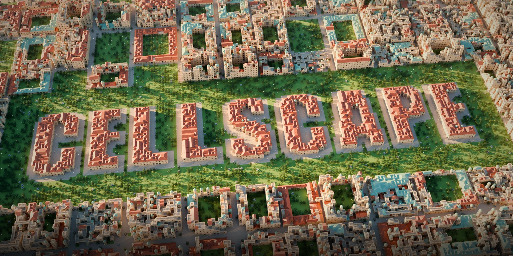

Cellscape
Grow buildings.
Collapse whole cities.
Cellscape brings two of the most loved procedural techniques into Blender: MarkovJunior, which grows castles, temples and towers by rewriting a grid rule after rule, and Wave Function Collapse, which fills a street plan with terraced, walkable cities that can be extended forever.
187 MarkovJunior models
52 in 3D
Build animation
16 WFC tilesets
10 city styles
Infinite cities
Build by clicking
Blender 4.2 – 5.2

187procedural models
16original models
16WFC tilesets
10city styles
∞extendable cities
0dependencies